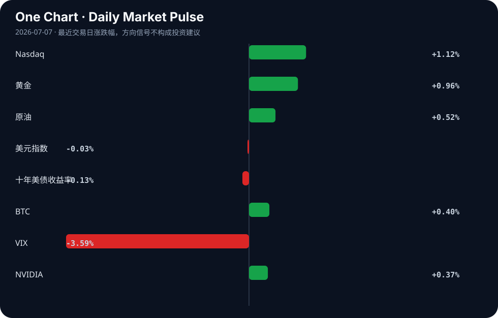

Daily Intelligence
2026-07-07｜Tuesday
Today’s Thesis｜今日一句话
AI 泡沫的宏观预警与地方监管的同步落地，正在将 AI 产业从“无约束扩张”推向“合规与 ROI 双重验证”的挤兑期。
① Executive Summary｜30 秒
- AI：监管实质性落地（伊利诺伊州首创前沿模型审计法 [A4][A18]），同时宏观层面（美国财政部、银行及超大规模厂商）密集发出 AI 泡沫预警 [A13][A21]，AI 产业进入 ROI 验证期。
- 商业：美国 ISM 服务业新订单降温提振降息押注 [B6]，医疗科技（Clover Health 目标价近翻倍 [B17]）与 AI 垂直应用（ALS 辅助 [A9]）获资本青睐。
- 宏观：地缘风险（美伊和谈僵局 [B21]）与降息预期交织，避险资产与风险资产同涨，市场在矛盾中寻找方向。
② AI Daily
泡沫预警与 ROI 挤压
What Happened：美国财政部报告警告 AI 泡沫可能引发经济冲击波 [A21]；Apollo 首席经济学家指出 AI 市场可能面临“痛苦的重新定价” [A15]；银行及超大规模厂商同步拉响警报 [A13]。 Why It Matters：资本对非科技领域 AI 投资回报率的耐心正在耗尽 [A14]，打破了此前“算力投入必将带来生产力飞跃”的单向信仰。 Second-order Effect：算力需求预期放缓 → 超大规模厂商资本支出冻结 → 依赖云算力的 AI 初创公司面临并购或出清。 因果链：资本要求 ROI → AI 投资降速 → 泡沫重新定价
前沿模型监管破冰
What Happened：伊利诺伊州州长签署全美首部法律，要求对前沿 AI 模型进行第三方安全审计 [A4][A18]。 Why It Matters：在联邦层面行动迟缓时，州级立法确立了合规底线，大幅增加了大型模型开发者的运营摩擦与合规成本。 Second-order Effect：合规工具成为强制基础设施 → 欧盟及美国合规网关（如 Dike [A17]）迎来商业爆发 → 未经审计的开源模型被挤出企业级应用市场。 因果链：地方监管落地 → 审计成本内生化 → 前沿模型市场集中度进一步提高
攻防自动化升级
What Happened：JadePuffer 勒索软件使用 AI 智能体自动化了整个攻击过程 [A12]。 Why It Matters：攻击的边际成本降至接近零，传统人力防御体系失效，防守方必须以同等级别的 AI 智能体（如 Kennel [A7]）进行自动化响应。 Second-order Effect：AI 安全智能体成为企业必需品 → 安全预算从人力转向软件智能体 → 网络安全行业商业模式重构。
③ Business Daily
科技：端侧 AI 硬件与云部署走向分化。AMD 推出 Ryzen AI Halo 迷你主机，试图以 4000 美元的高溢价让本地 AI 变得容易 [A16][A23]，但这一定价策略在缺乏杀手级应用时面临阻力；另一边，AWS 实现了 Hugging Face 到 SageMaker Studio 的一键部署 [A3]，以降低摩擦力锁定云生态。
医疗：AI 在垂直医疗场景的变现路径逐渐清晰。AI 技术正在实质性地帮助 ALS 患者 [A9]；同时，UBS 将医疗保险科技集团 Clover Health 的目标价近翻倍 [B17]，暗示数据驱动的 AI 医疗险种正在获得传统金融模型的估值认可。
能源/制造：实体资产仍在扩张。RevCo Energy 将总部和制造业务落地 Round Rock [B3]；TPI Composites 成功走出 Chapter 11 破产保护 [B16]，表明风电制造链在经历出清后重获流动性支持。
④ Macro Observation｜机制分析
世界正在发生什么？ 美国 ISM 服务业新订单在 6 月出现降温 [B6]，同时美国财政部与主流金融机构对 AI 泡沫发出最高级别警告 [A13][A21]。
为什么发生？ 高利率环境终于渗透到服务业需求端，抑制了企业扩张意愿；而在科技端，巨额 AI 资本支出未能如期转化为全行业生产率证据，引发投资回报率的集体焦虑 [A14]。
资本如何流动？ 资本正从“宽基科技扩张”转向“降息押注与避险对冲”。ISM 数据降温提振了降息预期，资金流入医疗科技 [B17] 与黄金 [B7]；同时，SEC 与 CFTC 对加密衍生品保证金的审查 [B20] 正在抽离加密市场的过剩流动性。
接下来关注什么？ 降息预期与 AI 泡沫破灭的赛跑。若 AI 泡沫在降息实质性落地前破裂，反身性效应将导致算力资产贬值 → 抵押品缩水 → 信贷紧缩，引发更深的宏观经济冲击 [A21]。
*事实与推断区分*：ISM 降温与伊利诺伊州法案签署为事实；AI 泡沫将引发经济冲击波、降息将顺利落地为推断。
⑤ Signal Dashboard
| 指标 | 最新值 | 今日 | 信号 |
|---|---|---|---|
| Nasdaq | 26,121.16 | ↑ +1.12% | 风险偏好改善 |
| 黄金 | 4,176.60 | ↑ +1.55% | 避险/通胀对冲增强 |
| 原油 | 68.70 | → +0.01% | 供需平衡 |
| 美元指数 | 100.86 | → -0.00% | 中性 |
| 十年美债收益率 | 4.48 | ↓ -0.13% | 中性 |
| BTC | 64,215.62 | ↑ +1.05% | 风险偏好改善 |
| VIX | 15.57 | ↓ -3.59% | 风险偏好改善 |
| NVIDIA | 195.55 | ↑ +0.37% | 风险偏好改善 |
⑥ Deep Insight
AI 泡沫的“反身性挤压”：当宏观降息预期遇上微观 ROI 幻灭
当前市场对 AI 产业的定价隐含了一个脆弱的假设：算力与数据的投入将不可避免地转化为全行业的生产力跃升。然而，美国财政部与 Apollo 的预警 [A13][A15][A21] 揭示了一个被广泛忽略的机制断裂——宏观层面的服务业降温 [B6] 正在收缩 AI 变现的终端需求，而微观层面的 ROI 缺失 [A14] 正在切断资本输血。这构成了典型的反身性挤压：资本预期转弱 → 算力投资降速 → 模型迭代与部署放缓 → ROI 进一步证伪 → 预期更加悲观。
与互联网泡沫不同，本轮 AI 挤兑的触发点并非单纯的高利率，而是“合规摩擦”的骤增。伊利诺伊州强制前沿模型第三方审计 [A18] 与 EU 合规网关 [A17] 的出现，意味着 AI 的部署成本从单纯的算力资本支出，转向了持续的合规运营支出。当 JadePuffer 勒索软件利用 AI 智能体实现全链路自动化攻击 [A12] 时，安全防御的运营支出也将呈指数级上升。因此，这一轮挤兑的本质不是需求毁灭，而是成本重构。
在这个重构过程中，产业正发生结构性分化。一方面，AMD 试图通过 Ryzen AI Halo 等高溢价本地硬件 [A16] 将算力合规成本内化至端侧，但 4000 美元的定价在 ROI 不明的前提下难以大众化；另一方面，AWS 通过 Hugging Face 一键部署 [A3] 试图降低云端的摩擦力，但这反而加深了厂商锁定。只有那些能越过合规门槛且具有明确现金流的垂直应用（如 ALS 辅助技术 [A9] 与 AI 法律工具 [A22]），才能在挤兑中存活。
反方观点：若美联储因 ISM 降温而实质性降息 [B6]，资金成本的下降将拉长 AI 产业的 ROI 容忍期。此外，AI 在医疗 [B17] 与法律 [A22] 领域的渗透已证明其具备降本增效的刚性需求，泡沫可能以软着陆而非崩溃的形式收场。
证伪条件：未来两个季度内，若超大规模厂商的 AI 相关资本支出不减反增，且非科技行业的 AI 营收增速持续超过 30%，则“反身性挤压”逻辑失效，证明当前 ROI 焦虑仅是短期情绪。
⑦ Tomorrow Watch
1. 伊利诺伊州 AI 安全法 [A18] 的具体生效日期及首个前沿模型第三方审计的启动时间。
2. 美联储官员对 6 月 ISM 服务业降温数据 [B6] 的公开表态，验证降息押注的合理性。
3. AMD Ryzen AI Halo (4000 美元本地 AI 设备) [A16] 发售后的首周销量与开发者生态反馈。
4. JadePuffer 勒索软件 AI 智能体 [A12] 在野扩散的规模及安全社区的防御响应机制。
5. 美伊和谈进展 [B21] 对原油供应预期及避险资产定价的波动传导。
⑧ One Chart

图表显示了风险资产（纳斯达克、BTC）与避险资产（黄金）同步上涨的罕见宏观组合。这表明市场在定价降息预期带来的流动性改善时，仍在同时对冲地缘政治或 AI 泡沫的尾部风险，两类资产的相关性上升源于共同的宏观驱动，而非互为因果。
⑨ Quote of the Day
“Price is what you pay. Value is what you get.”
— Warren Buffett
⑩ Action Items｜今天值得思考什么
1. 验证非科技领域的 AI 投资回报率数据，检验 Apollo 提出的“ROI 长跑道”推断 [A14] 是否成立。
2. 关注伊利诺伊州法案 [A18] 对开源模型分发与微调的实际阻断效力。
3. 比较本地 AI 硬件（AMD Halo [A16]）与云端一键部署（AWS SageMaker [A3]）在不同企业规模中的边际成本差异。
4. 追踪JadePuffer [A12] 等 AI 自动化攻击对网络安全行业预算结构从人力向智能体转移的催化作用。
5. 思考ISM 宏观降温 [B6] 与 AI 泡沫预警 [A21] 叠加下，科技股估值支撑点从“成长性”向“现金流”漂移的速度。
信息边界
- 来源覆盖：AI 监管、AI 泡沫宏观预警、端侧/云 AI 部署、网络安全、美国服务业宏观数据、医疗科技及地缘政治。
- 时效：新闻源覆盖至 2026-07-06 22:38 GMT。
- 限制：市场数据反映最近交易日收盘值；新闻源多为二手聚合，关键法律条款细节与金融判断需回溯原文验证；未包含未提供的亚洲及欧洲其他核心经济数据。
Sources
AI
- A1：贝利预言巴西世界杯夺冠？人工智能迎来真实性之问 - 华龙网 — Google News · AI 中文
- A2：Not everything should cost a token: the case for deterministic AI — Hacker News · AI
- A3：From Hugging Face to Amazon SageMaker Studio in one click - Amazon Web Services (AWS) — Google News · AI
- A4：Illinois governor signs AI safety law requiring audits of frontier models - StateScoop — Google News · AI
- A5：Pritzker signs landmark AI regulation bill that aims to mitigate risks - KWQC — Google News · AI
- A6：Show HN: Nimbus - open-source AI agent that operates your AWS and GCP — Hacker News · AI
- A7：Kennel – Keep Your AI Agents Running Between Tasks — Hacker News · AI
- A8：x.ai Voice Agent Builder — Hacker News · AI
- A9：Artificial intelligence technology helping patients with ALS - CBS News — Google News · AI
- A10：Attribute Knowledge RAG Pattern for Governed AI Agents — Hacker News · AI
- A11：UCO Launches New AI Degree Programs to Meet Growing Workforce Demand - The University of Central Oklahoma — Google News · AI
- A12：JadePuffer ransomware used AI agent to automate attack — Hacker News · AI
- A13：Even banks and hyperscalers are now sounding the alarm about the AI bubble — Hacker News · AI
- A14：AI: The ROI Runway Could Be Long Outside the Tech Sector — Hacker News · AI
- A15：Apollo economist says a 'painful repricing' of AI markets is possible — Hacker News · AI
- A16：AMD's Ryzen AI Halo makes local AI look easy, but it doesn't come cheap — Hacker News · AI
- A17：Show HN: Dike is a compliance gateway for AI products in the EU — Hacker News · AI
- A18：Gov. JB Pritzker signs first-in-nation Illinois law requiring third-party safety audits for AI giants - Chicago Tribune — Google News · AI
- A21：US Treasury Report Warns AI Bubble Could Trigger Economic Shockwaves - PYMNTS.com — Google News · AI
- A22：How AI Legal Tools Are Empowering Consumers - Impakter — Google News · AI
- A23：AMD Ryzen AI Halo Is a Powerful Mini PC with Open-Source Software — Hacker News · AI
Business & Macro
- B3：Technology company RevCo Energy to locate HQ, manufacturing operations in Round Rock - Community Impact — Google News · Technology Business
- B6：美国ISM服务业新订单6月降温，提振降息押注与波动率对冲策略 - VT Markets — Google News · 行业
- B7：Gold Price Forecast 2026: Fed Policy Shifts & Investment Strategy - Intellectia AI — Google News · Markets Policy
- B16：TPI Composites Successfully Emerges from Chapter 11 under - GlobeNewswire — Google News · Technology Business
- B17：UBS Nearly Doubles Its Price Target on Clover Health (CLOV) - Insider Monkey — Google News · Technology Business
- B20：SEC And CFTC Margining Review Could Matter For Crypto Derivatives Desks - CryptoRank — Google News · Markets Policy
- B21：Why the US-Iran peace deal remains the key market risk factor for the rest of the year - Yahoo Finance — Google News · Markets Policy